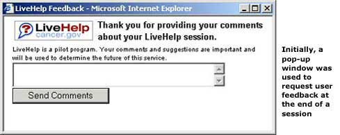

Instant messaging (IM) is a new technology that allows one-on-one communication in which the sender specifies the recipient and typically types a simple text message, while the recipient has a window pop up automatically that immediately displays the short message. While there are over 60 million people worldwide using IM, this project was unique in that instant messaging technology was integrated on the Web so that users could get better access to cancer information.
LiveHelp
LiveHelp, NCI's instant messaging service, is a pilot program that provides search and navigation support for users of NCI Web pages. The program is being piloted to evaluate the efficacy and efficiency of instant messaging to facilitate access to cancer information. The NCI Information Specialists who provide assistance on LiveHelp are not health professionals. LiveHelp should not be used as a substitute for a consultation with a health professional.
- Create a commonly understood access point to the service.Designing a name, logo, and graphics that clearly communicated the goals of the service to the user was a challenge. We wanted to create a link to LiveHelp that could reside on any variety of NCI sites.
- Discourage inappropriate use of the service. We didn't want users clicking on the LiveHelp links for the wrong reasons and then abandoning the session. This is a different user interaction then clicking on a normal, underlined hyperlink because instead of getting another Web page, users are now accessing an instant messaging service.
Initial Testing of the Name, Logo, and Graphics
When designing a new feature such as an instant messaging service on a Web site, the right name and graphic can help communicate the purpose, goals, and establish a brand identity. Obtaining input from your users early on in the design process helps ensure the name and logo are consistent with their expectations.
Initial branding names and designs were usability tested to determine user preferences and performance. Users were given a description of the instant messaging service, then shown the names and logos and asked to choose those that best reflected the service.
Users were then placed on a Web page and given a scenario that was impossible to complete. We asked what they would do to try to complete the task, and wanted to see if users saw the icon and clicked on it for help.
Lessons Learned
-
Users should choose the graphics, not the developers. Most users chose the Question Mark icon (the simplest and most familiar of the designs), while developers favored the Faces icon (a more subtle and artistic approach). See Figure 1 below.
-
Put important items at the top, "above the fold" (in the first screenful of information), to ease scanning. Users generally look at the top center of a page first, then look left, then right, and finally begin systematically moving down the total page. This is consistent with one of our guidelines.
-
Avoid using graphics that do not have descriptive labels as clickable items wherever possible. Our initial graphic designs did not appear to be clickable to users. Users are less likely to click on a graphic that does not look like a link. This is consistent with one of our guidelines.

Further Testing of the Logo and Graphics
A second round of usability testing was conducted to further narrow down logo preferences and to see if users could find the revised LiveHelp logos and click on them. The logos and graphics were redesigned to be more visible on the page and look more like a link.
Lessons Learned
-
Users tend to ignore graphics that look like banner ads. We increased the size of the logos, and added more color in an attempt to make the logos look more like links. The result looked more like banner ads, which users tended to ignore.
-
A button communicates "clickability." We added a "LiveHelp" button near the "Search" button at the bottom of the form because it is in a location where users expect an action to take place. We did this to increase the chances that users would access the service.
-
Increase the link affordance of graphics. Adding the LiveHelp button to the graphic clearly communicated to users that the graphic was clickable.
Testing the Instant Messaging User Interface
A third round of usability testing was conducted to see if users responded to the new link designs and were able to actually carry out a LiveHelp session. When users click on the LiveHelp link, a new window opens on their browser where the session will actually take place. This is so users can maintain access to the existing page they're on and ask questions in a separate window. Users were able to carry out a successful test session.
We also beta tested the LiveHelp service with over 100 users before releasing it to the public mainly to:
- Test the system's technical functionality
- Obtain user feedback on the service to identify any major functional problems
- Provide the information specialists with adequate practice using this new technology
Lessons Learned
-
Avoid using unsolicited pop-up windows. After a LiveHelp session is over and the user closes the session window, a new, unsolicited pop-up window appeared in which users could provide their feedback about the service.

User feedback about this window was overwhelmingly negative, and we ended up placing a link to the feedback form in the closing dialogue of an IM session.
-
Avoid using drop-down menus. Before beginning a session, we felt it was important to have a transition screen that gives a description of the service and allows users to select the type of help they need. The initial design had a drop-down menu to select the type of help, and we found that users tended to ignore the drop-down menu.

You can't control the types of questions users ask an instant messaging service. The help categories had been designed to provide a general scope of the service and to better route users' questions to the appropriate specialist. However, it was apparent that users did not compartmentalize their help requests according to our categories, and the welcome window was changed to reflect the types of specialists available to help them.

Etiquette and Protocol of Instant Messaging
Instant messaging is a new technology that has great potential in communicating health information. Through beta testing, we learned what worked well and what communication issues needed improvement.
-
Warn users when opening a new window on their computer.LiveHelp Information Specialists have the ability to open a new Web browser on a user's computer to bring them directly to the information they are looking for. Some users got very upset and flustered when this happened.
How To Do It
Information Specialist: "We have a fact sheet that discusses various ways of looking for financial aid. Would you like me to open that page for you?"
User: "Sure."
Information Specialist: "Okay, I will open a new window on your computer. Although this may minimize our dialogue box, I will still be available to help. Just click on the LiveHelp button on your taskbar below."
-
Give constant feedback to users to avoid the "lost in cyberspace" feeling. When searching for information, specialists should ask the user to wait and give frequent updates as to their progress.
How To Do It
Information Specialist: "Okay, will you please hold while I search for that information? It might take a few minutes."
User: "Sure."
(After a few minutes have passed)
Specialist: "I'm still looking for that info, would you mind holding a few more minutes?"
User: "No problem."
For more information
For more information or to contact the National Cancer Institute's (NCI's) Cancer Information Service (CIS) please go to http://www.cancer.gov/aboutnci/cis/page1.